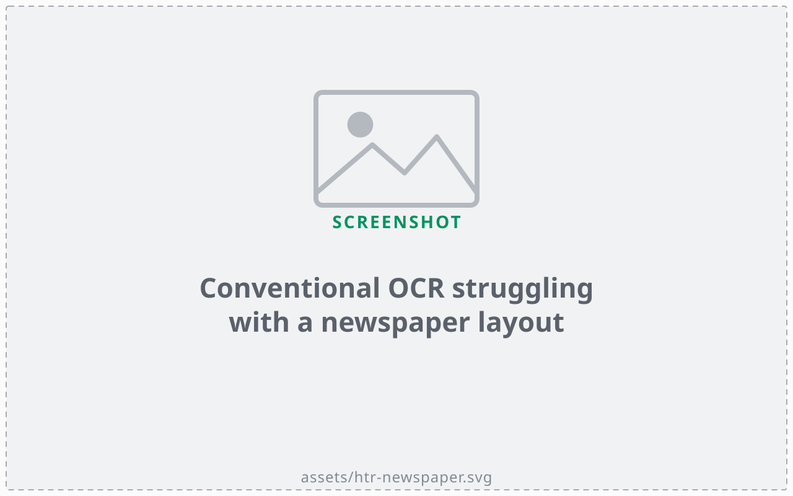
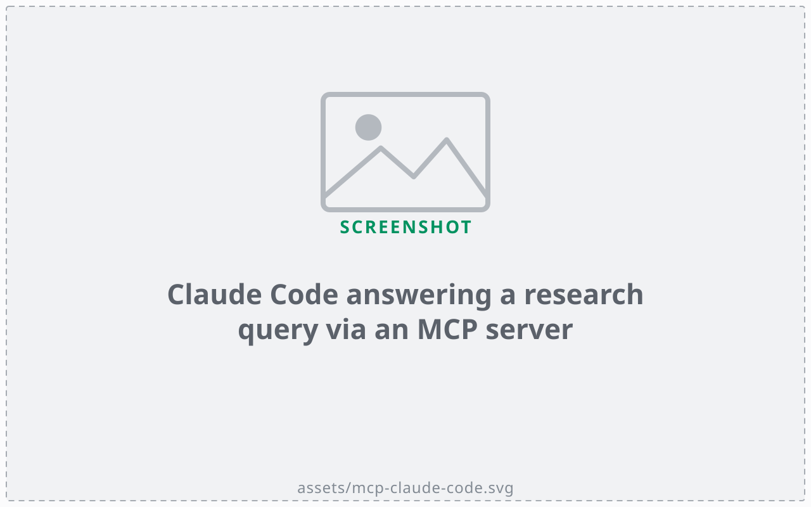

Seminar series · Digital History in/of Central Asia · FAU Erlangen-Nürnberg · 29 June 2026
Islam's “Peripheries”
Digital humanities, algorithmic analysis, and AI in West Africa and Central Asia.
Aksana Ismailbekova
Leibniz-Zentrum Moderner Orient (ZMO)
Frédérick Madore
Africa Multiple Cluster of Excellence · University of Bayreuth
Thank you for the invitation. Our two regions — West Africa and Central Asia — rarely share a seminar room, let alone a research project. Today we want to explain why we think they belong together, and how AI-assisted digital methods let two locked-up archives speak to each other for the first time. We'll move from the conceptual claim, through the archives and the problem they pose, to the three things we're building — and the risks we're managing as we go.
The conceptual stake
Why “peripheries”?
In Islamic studies, sub-Saharan Africa and Central Asia are often treated as marginal
Distant from the “real” Islam of the Middle East
Yet Muslim delegations from Togo and Dahomey (Benin) visited Soviet Central Asia, 1960s–70s — and vice versa
The project challenges the centre–periphery frame itself
Start with the word in the title, in quotation marks. In Islamic studies, both of our regions are framed as edges — sub-Saharan Africa and Central Asia, far from the Arab heartland, doing a supposedly derivative version of the faith. The framing is old and it is wrong. These clippings from the West African press — Togo-Presse and Daho-Express, between 1963 and 1972 — report Muslim delegations travelling between Togo, Dahomey, and the Soviet Central Asian republics. The traffic went both ways. So the periphery was never isolated; it was networked. Our project takes that as its starting point: not to add two more cases to the margin, but to question the centre against which they were ever called marginal.
01
The challenge
Vast multilingual archives, studied in silos.
Before the methods, the material. Two problems stand in the way of the comparison we just described: the sheer scale and language spread of the sources, and a scholarly habit of keeping the two regions apart.
The problem
Vast archives, locked away
~16,000 documents
10+ languages
Partial cataloguing
Russian Arabic Hausa
Tajik French Uzbek
Persian Turki German
English
Why it stays locked
Volume and linguistic diversity defeat traditional analysis; rich historical insight stays out of researchers' reach.
Here is the scale. Across the two collections, roughly sixteen thousand documents, in more than ten languages — Russian, Arabic, Hausa, Tajik, French, Uzbek, Persian, Turki, German, English. Several scripts, several alphabets. Only part of it is catalogued. No single scholar reads all of these languages, and even a team can't manually work through this volume across this many tongues. So the material exists, it is preserved, but it is effectively closed: the insight inside it is unreachable with the methods we usually bring to an archive. That gap between what is held and what is usable is the practical problem the project sets out to solve.
Rarely compared
Studied in silos
West Africa · post-1960s
Islamic discourse and public engagement
Post-colonial nation-building
Western-educated Muslim voices
Francophone press and audiovisual sources
Central Asia · Soviet era + Tajik civil war
Russian imperial administration records
Early Soviet governance of Muslim communities
Islamic reformers and local agency
Rare Emirate of Bukhara materials
The second obstacle is scholarly, not technical. These two fields almost never talk. West African Islam, since the 1960s, is studied through public debate, the post-colonial nation, a Western-educated Muslim elite, and a rich francophone press and audiovisual record. Central Asian Islam is studied through imperial Russian and early Soviet governance, reformers pushing back, the rare materials of the Emirate of Bukhara. Different archives, different languages, different historiographies — and so the obvious comparative questions never get asked. Were Muslim publics being formed in similar ways under very different states? We can't know while the two literatures sit in separate rooms. Putting the sources on common ground is the precondition for asking.
Both held at ZMO
Two multilingual digital collections
Islam West Africa Collection (IWAC)
14,500+ items — newspapers, Islamic publications, photographs9,315 minutes of audio in Hausa6 countries, since the 1960s
Reinhard Eisener Collection
1,612 documents across 50 archival boxesBukhara (1917–30), Soviet governance, Tajik civil war (1992–97)
8 languages incl. Turki; multiple scripts
Concretely, two collections, both held at the Leibniz-Zentrum Moderner Orient in Berlin. The first is the Islam West Africa Collection, IWAC, which Frédérick has built since 2023: over fourteen thousand five hundred items — newspapers, Islamic publications, photographs — plus more than nine thousand minutes of audio in Hausa, drawn from six countries since the 1960s, and open access. The second is the Reinhard Eisener Collection: sixteen hundred documents across fifty archival boxes, the estate of a single scholar, covering the Emirate of Bukhara, early Soviet governance, and the Tajik civil war of the nineties — eight languages, including Turki, and several scripts. Two very different objects. The wager of the project is that the same set of methods can open both.
02
The approach
AI-driven digital humanities, built across two regions.
So how do we get from sixteen thousand documents in ten languages to a comparison a researcher can actually run? This is the heart of the talk: one guiding question, and three things we're building to answer it.
How can AI-driven DH methods transform access to and interpretation of these collections — enabling new comparative methods for Islamic discourse across regions?
The project's guiding question.
Here is the question in full. Two verbs in it matter. Access — can we even get into these documents, read the text, search them, find what is there? And interpretation — once inside, can we ask analytical questions that cross the two regions, rather than treating each as a closed case? The phrase to hold onto is "comparative methods for Islamic discourse across regions." The point is not AI for its own sake; it is whether these tools let us pose a genuinely comparative history that the archives, in their raw state, simply do not permit. Three innovations follow.
Innovation 1 / 3
From raw documents to structured data
AI turns scanned, multilingual pages into machine-readable data.
Extracts text from scans — Hausa, Arabic, Cyrillic, Old Tatar
Handles complex layouts that defeat conventional tools
Transcribes audio recordings
Pulls out people, places, dates as structured fields

A conventional OCR tool struggling with a newspaper layout.
First innovation: getting the text out. Until recently, optical character recognition broke on exactly this material — non-Latin scripts, historical typefaces, and the dense multi-column layout of a newspaper, like the one on the right. Modern AI models read these far better. They cope with Hausa, Arabic, Cyrillic, even Old Tatar; they follow a complicated page; they transcribe the Hausa audio; and, crucially, they do not just hand back a wall of text — they pull out the entities, the people, places, and dates, as structured fields we can query and link. That single step, from raw scan to structured record, is what turns a box of papers into something a computer can compare.
Innovation 2 / 3
A cross-regional chatbot

An AI assistant answering a query via an MCP server.
Keyword search returns exact matches, not meaning — and breaks on 10+ languages, variant spellings, OCR noise.
MCP connects AI to the collections — data stays on our servers“Skills” encode each collection's contents, context, navigation
Plain-language questions search both collections at once
A public chatbot on the project website, open to all
Second innovation: a way to ask. A keyword search only finds the exact string you typed — useless when meaning is spread across ten languages, when names are spelled three ways, when the OCR still carries noise. So we connect a language model directly to the collections using the Model Context Protocol, MCP. Two things matter about that. First, the data stays on our institutional servers — we send the question to the model, not the archive to a company. Second, we write what are called "skills": short documents that teach the AI what each collection holds, its historical context, and how to navigate it. A researcher then asks a question in plain language, in English or French, and the system searches both collections at once and answers with sources. We are putting this on the project website as a chatbot, open to anyone.
Innovation 3 / 3
Equitable, accessible, sustainable
Designed to run anywhere, and to be checked by people.
Open-source models by default; commercial AI only as fallback
Runs locally — no expensive infrastructure
Human-in-the-loop: experts validate before anything enters the database
All code open access — reusable by scholars and archivists anywhere
AI-NER-Validator — experts verify AI-extracted keywords before entry.
Third innovation is really a set of principles, because how you build this matters as much as what it does. We use open-source models by default, and reach for a commercial system only where the local one genuinely falls short. It is designed to run locally, without expensive infrastructure — which is what makes it usable in Global South institutions, not only well-funded Northern ones. Nothing the AI produces enters the database unchecked: an expert validates it first. The screenshot shows our review interface, the AI-NER-Validator, where a specialist confirms or corrects the keywords the model extracted before they are committed. And all of the code is open access, written to be reused and adapted by other scholars and archivists. The aim is a method other people can pick up, not a black box only we can run.
Honest about the downside
Embracing and managing risk
Risk Mitigation
AI invents text (hallucination) or modernises historical spelling
Original scans preserved beside every AI output; all models and prompts documented on GitHub
The chatbot approach is largely untested on these collections
Iterative development; we document what works and what does not
Collections are only partially catalogued
AI complements — never replaces — manual cataloguing
AI tools evolve rapidly
Modular architecture; swap components as better tools emerge
We want to be candid about what can go wrong, because the failure modes here are specific. One: these models can hallucinate, or quietly modernise a historical spelling — and unlike old OCR, which produced obvious garbage, a clean wrong answer hides its own error. So we always keep the original scan beside the AI output, and we document every model and prompt publicly on GitHub. Two: nobody has really run this chatbot approach on archives like these, so we treat it as iterative and we write down what fails, not only what works. Three: the collections are only partly catalogued, so the AI complements human cataloguing rather than pretending to replace it. And four: the tools change every few months, so the architecture is modular — we can swap a component out when something better arrives. Managing risk here is not a disclaimer slide; it is built into the design.
Where it leads
Building sustainable networks
A concluding workshop turns the tools into a lasting network.
Scholars from West Africa and Central Asia, in one room
Interdisciplinary: Islamic studies, history, anthropology, DH
Hands-on training for researchers, archivists, heritage professionals
Goal: South–South networks that outlast the project
Where does this end up? Not only as software, but as people who can use it. The project closes with a workshop that brings together scholars from West Africa and Central Asia — the two communities that, as we said at the start, rarely meet — across Islamic studies, history, anthropology, and digital humanities. It is hands-on: researchers, archivists, and heritage professionals are trained on the tools we have built, so the capacity stays in the institutions rather than leaving with us. The goal we care about most is the last one: South–South networks, direct ties between the two regions, that outlast the grant. The infrastructure is the means; the network is the point.
Thank you · Vielen Dank
Comparing the “peripheries.”
AI-driven DH lets two locked archives speak to each other — and questions the centre they were measured against. islam.zmo.de
Aksana Ismailbekova
Leibniz-Zentrum Moderner Orient (ZMO)
Frédérick Madore
Africa Multiple · University of Bayreuth
To close, back to the word we began with. Calling these regions "peripheries" was always a judgement about where the centre is. Read side by side, with methods that finally make the archives legible, they stop being two margins and become a comparison in their own right — one that asks what the centre was for. We would be glad to take your questions, on the regions, the methods, or the risks. Thank you.